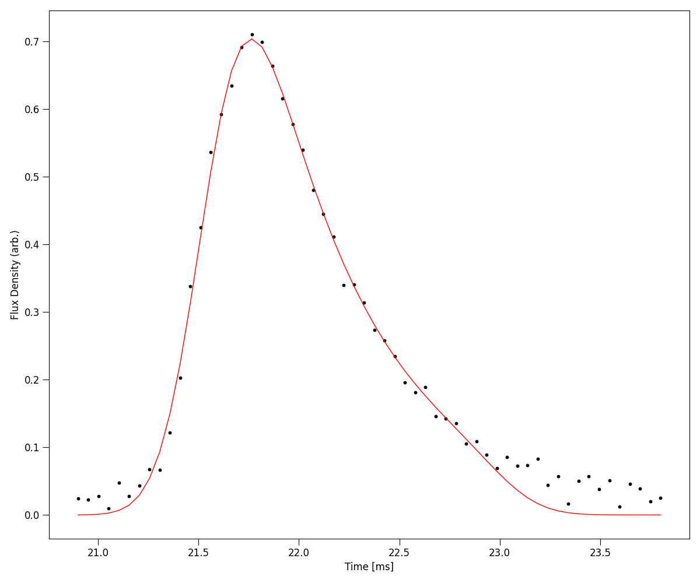
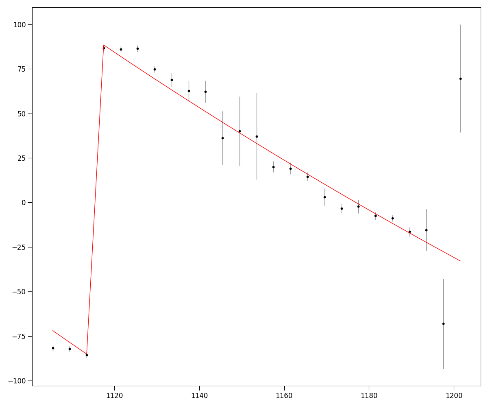
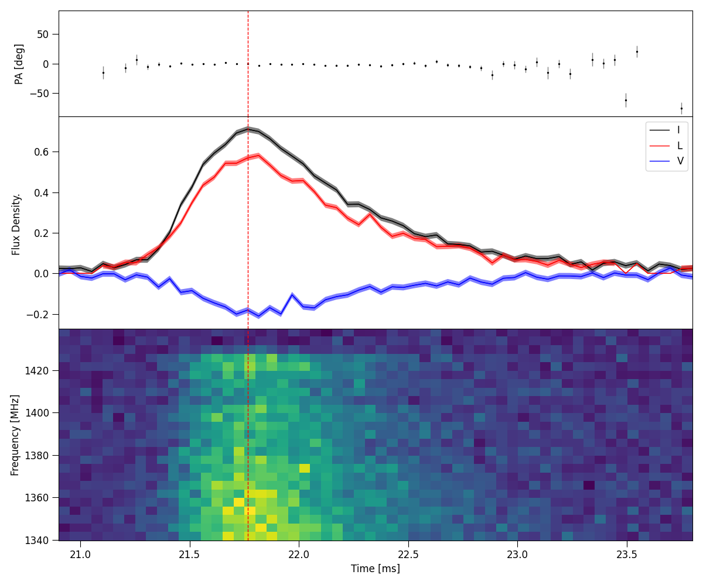

Tutorial 3: Fitting methods
In the second tutorial, we will breifly explore the methods we can use to fit various FRB parameters.
Scattering timescale
Following the last tutorial, load in the Power dynamic spectra data of 220610 and define a crop region.
from ilex.frb import FRB
# initialise FRB instance and load data
frb = FRB(name = "FRB220610", cfreq = 1271.5, bw = 336, dt = 50e-3, df = 4, t_crop = [20.9, 23.8],
f_crop = [1103.5, 1200])
frb.load_data(dsI = "examples/220610_dsI.npy")
We can fit the time series burst as a sum of Gaussian pulses convolved with a common one-sided exponential
where \(A_{i}, \mu_{i}\) and \(\sigma_{i}\) are the amplitude, position in time and pulse width in time of each \(i^{\mathrm{th}}\) Gaussian and \('*'\) denotes the convolution operation.
This is implemented in the .fit_tscatt() method of the FRB class. The simplest way to call this
function is to use a least squares fitting method.
# fit
frb.fit_tscatt(method = "least squares", show_plots = True)
{kind=link}

In most cases, an FRB burst will be more complicated. In which case a more robust method using bayesian
analysis is nessesary. To do so, priors need to be given. We also need to give our best estimate for the number
of pulses in the burst, which we can do with npulse
# priors
priors = {'a1': [0.5, 0.8], 'mu1': [21.0, 22.0], 'sig1': [0.1, 1.0], 'tau': [0.01, 2.0]}
# fit
p = frb.fit_tscatt(method = "bayesian", priors = priors, npulse = 1, show_plots = True)
{kind=link}
In the above code, we set the priors of the single pulse with suffixes 1, i.e. a1 for the amplitude of the
first pulse, mu1 for the position of the first pulse etc. If we had two pulses, we would also give priors for the amplitude
a2, position mu2 etc. In general for each pulse N, we specify its parameters aN, muN, sigN.
We can also return the p object, which is a fitting utility class which has a number of useful features, such as showing fitting
statistics
p.stats()
Model Statistics:
---------------------------
chi2: 52.2002 +/- 10.2956
rchi2: 0.9849 +/- 0.1943
p-value: 0.5053
v (degrees of freedom): 53
free parameters: 5
Bayesian Statistics:
---------------------------
Max Log Likelihood: 127.7476 +/- 2.2624
Bayes Info Criterion (BIC): -235.1929 +/- 4.5248
Bayes Factor (log10): nan
Evidence (log10): 48.0135 +/- 0.0980
Noise Evidence (log10): nan
Fitting RM and plotting Position Angle (PA) Profile
We can easily fit for the rotation measure (RM). Ilex provides 3 different methods for doing so.
Quadratic fitting of the polarisation position angle (PA)
method = "RMquad"
where \(\nu_{0}\) is the reference frequency. If this is not set, the central frequency cfreq
will be used instead.
Faraday Depth fitting through RM synthesis using the
RMtoolspackagemethod = "RMsynth"
https://github.com/CIRADA-Tools/RM-Tools
QU-fitting using methods described in the following papers
method = "QUfit"
https://www.science.org/doi/abs/10.1126/science.aaw5903
https://arxiv.org/abs/2505.17497
First we load in the stokes Q and U dynamic spectrum and use the .fit_RM() method,
here we will use RM synthesis
# load in data
frb.load_data(ds_Q = "examples/220610_dsQ.npy", ds_U = "examples/220610_dsU.npy")
# fit RM
frb.fit_RM(method = "RMsynth", terr_crop = [0, 15], t_crop = [21.4, 21.6], show_plots = True)
Fitting RM using RM synthesis
RM: 217.9462 +/- 4.2765 (rad/m2)
f0: 1137.0805274869874 (MHz)
pa0: 1.0076283903583936 (rad)
{kind=link}

The RM, f0 and pa0 parameters will be saved to the .fitted_params attribute of the FRB class.
Once RM is calculated, we can plot a bunch of polarisation properties using the master method .plot_PA().
frb.set(RM = 217.9462, f0 = 1137.0805274869874)
frb.plot_PA(terr_crop = [0, 15], stk2plot = "ILV", show_plots = True)
{kind=link}

Scintillation bandwidth
We can also fit for the modulation index and decorrelation bandwdith of any scintillation present in the FRB data using the
.fit_scintband() method. The example data provided with the ILEX package is ill-suited for showing this method, however example code
is show below of how a user may fit for it.
frb.fit_scintband(method = "least squares", n = 3)
in the code above, we use the least squares algorithm to fit for scintillation. A unique feature of this method is that we can subtract out
the broad spectral features of the FRB before fitting for scintillation, thus only fitting through the residuals. This is done by fitting the
broad spectral features using a polynomial of order n, which the user must specify as an argument to the ILEX method. (NOTE: subtracting out
the broad spectral features of the FRB can bias the decorrelation bandwdith that is fitted in some cases. Know exactly what you are fitting and why
before doing so!)